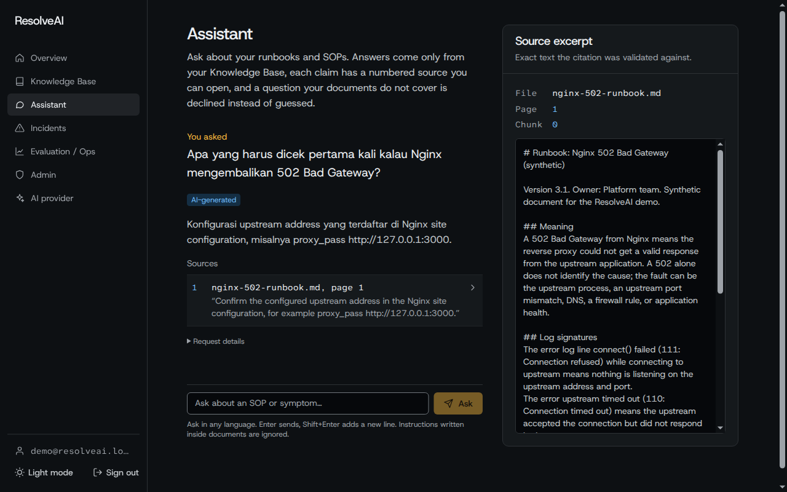
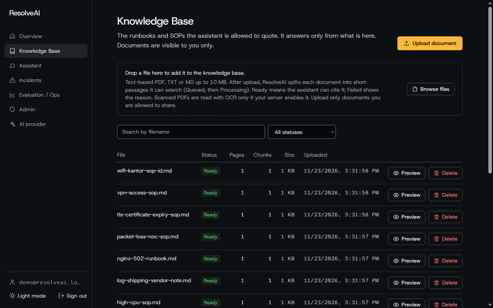
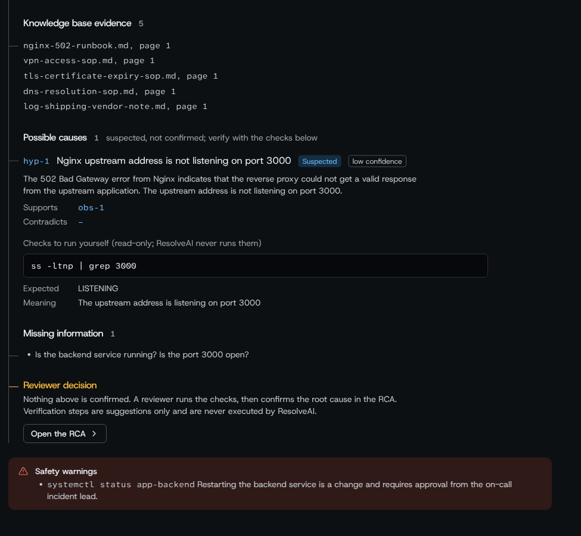
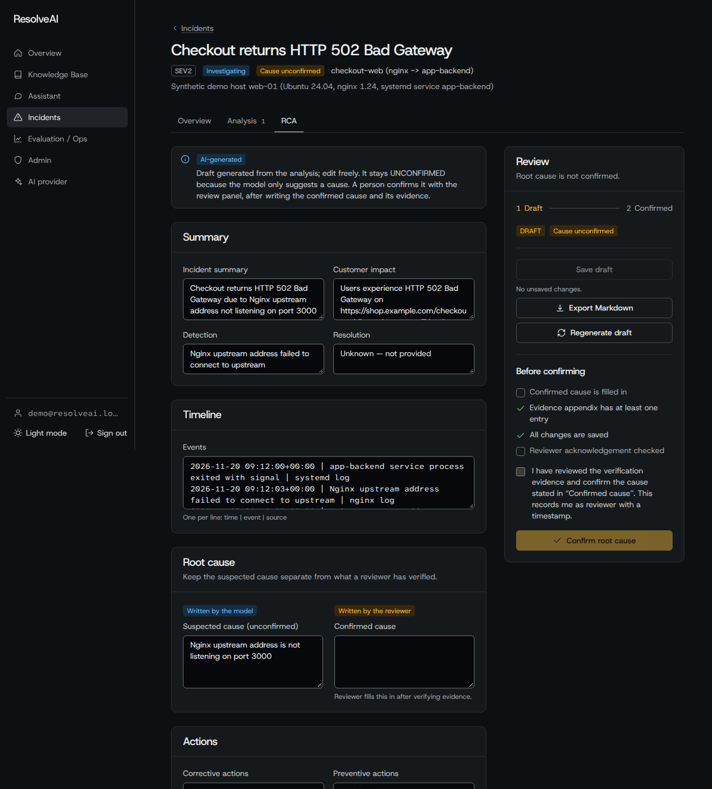

Incident answers you can verify
Cited answers from your runbooks. Root causes only a person confirms.

Every answer points at its source
Quotes are checked against the stored document before you see them. When the knowledge base has no evidence, the assistant says so instead of guessing. Ask in any language; quotes stay in the language of the source.

Possible causes stay possible
Paste symptoms and a log. Secrets are redacted before storage. The analysis cites log lines, labels every hypothesis as suspected and suggests only read-only checks.

Only a person confirms the root cause
RCA drafts start unconfirmed. A reviewer writes the confirmed cause and ticks an acknowledgement; editing it afterwards drops it back to unconfirmed.

One incident, start to finish
Measured on a free local model
| Right document in the top 5 | 20 of 20 |
|---|---|
| Citations shown that are valid | 100% |
| Unanswerable questions declined | 3 of 3 |
| Answerable questions declined anyway | 24% |
| Median answer time, CPU only | 12.6 s |
Ollama llama3.2:3b, 20 questions in five languages. Reports are in the repository.
Run it in a few minutes
Docker only. The mock provider needs no API key.
git clone https://github.com/danday-git/resolveAI && cd resolveAI
cp .env.example .env
sed -i 's/^\(LLM\|EMBEDDING\)_PROVIDER=openai/\1_PROVIDER=mock/' .env
docker compose -f infra/docker-compose.yml --env-file .env --profile web up --build -d
docker compose -f infra/docker-compose.yml exec api python -m app.seed --with-fixtures
# http://localhost:3000, demo@resolveai.local / change-me-demo-password